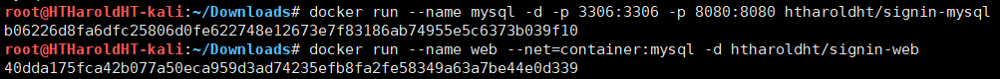

数据库大作业
本文主要介绍一下如何配置数据库大作业, 以及如何进行验证。
拉取镜像到本地
注意，以下二者选择其一即可。
第一种由于数据库在我电脑上，所以只能在校园网环境下使用。第二种会配置数据库环境，可以独立运行。
仅 Web 环境
以下命令拉取后只包含一个 Web 环境，数据库在我电脑上。
1 | docker pull htharoldht/signin-database # 仅拉取 Web 环境 |
Web 环境和数据库环境
1 | docker pull htharoldht/signin-web # 拉取 Web 环境 |
启动环境
仅 Web 环境的启动
在终端里运行以下命令
1 | docker run -d -p 8080:8080 htharoldht/signin-database |
其中，这一串数字是容器的 ID，之后结束环境的时候会用到。
Web 环境和数据库环境的启动
1 | docker run --name mysql -d -p 3306:3306 -p 8080:8080 htharoldht/signin-mysql # 数据库环境的启动 |

同样的，这两串数字也会在结束环境的时候用到。
环境测试
打开浏览器，浏览以下网址即进入登录界面，其中第一个字段是 docker 宿主机的 IP 地址，如果宿主机就是本机的话，也可以直接使用 127.0.0.1:8080。
因为我是在虚拟机中开的环境，物理机中进行的测试，所以使用的是虚拟机的 IP 地址。
1 | http://192.168.153.154:8080/SignIn/ |
登录
首页为学生登录界面，若是老师，需要点击我是老师。
学生
用户名和密码如下，任选其一即可登录。
| 用户名 | 密码 | 用户名 | 密码 | |
|---|---|---|---|---|
| 00127 | 123456 | 00128 | 123456 | |
| 12345 | 123456 | 19991 | 123456 | |
| 23121 | 123456 | 44553 | 123456 | |
| 45678 | 123456 | 54321 | 123456 | |
| 55739 | 123456 | 70557 | 123456 | |
| 76543 | 123456 | 98765 | 123456 | |
| 98988 | 123456 |
老师
老师登录界面和学生的基本一致，只是细节不同：
用户名和密码如下，任选其一即可登录。
| 用户名 | 密码 | 用户名 | 密码 | |
|---|---|---|---|---|
| 10101 | 123456 | 12121 | 123456 | |
| 15151 | 123456 | 22222 | 123456 | |
| 32343 | 123456 | 33456 | 123456 | |
| 45565 | 123456 | 58583 | 123456 | |
| 76543 | 123456 | 76766 | 123456 | |
| 83821 | 123456 | 98345 | 123456 |
签到
签到之前需要由老师设置签到，而后学生的签到才是有效的。
老师发布签到
以下以 10101@123456 为例进行演示。
老师登录后将看到如下界面：
老师需要手动设置相应的课程名编号、课程段编号、学期与年进行发布签到。其课选择的内容如下：
| 课程名编号 | 课程段编号 | 学期 | 年 |
|---|---|---|---|
| CS-101 | 1 | Fall | 2009 |
| CS-101 | 1 | Spring | 2010 |
| CS-190 | 1 | Spring | 2009 |
| CS-190 | 2 | Spring | 2009 |
| CS-315 | 1 | Spring | 2010 |
| CS-319 | 1 | Spring | 2010 |
| CS-319 | 2 | Spring | 2010 |
| CS-347 | 1 | Fall | 2009 |
| EE-181 | 1 | Spring | 2009 |
| MU-199 | 1 | Spring | 2010 |
| BIO-101 | 1 | Summer | 2009 |
| BIO-301 | 1 | Summer | 2010 |
| FIN-201 | 1 | Spring | 2010 |
| HIS-351 | 1 | Spring | 2010 |
| PHY-101 | 1 | Fall | 2009 |
以 CS-101@1@Fall@2009 为例，设置好了以后，点击开始签到，则老师会进入一个缓冲页面：
当点击查看未签到的学生时，则将会看到所有上该门课的未签到的学生学号和姓名，如下所示：
学生签到
以下以 123456@123456 为例进行演示。
学生登录后将会看到如下界面：
当学生输入老师要求的相应的课程名编号、课程段编号、学期与年后即可点击签到进行有效的签到。
当签到成功时，会显示如下界面：
否则签到不成功。
结束环境
在终端中执行以下命令
1 | docker stop 674f36e74 |
其中，674f36e74 是在签到环境的时候生成的一串数字，不需要所有的数字，只需要前面几位即可。
注：选择第二种方式的，需要结束两个环境，方法同上。
至此，整个大作业的演示就已经结束了。